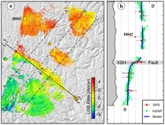

- Postdoctoral positions available ALL YEAR ROUND (details)
- GRL: Plate-scale deformation in Turkey from S-1 InSAR & GNSS
- GRSL: Modelling-assisted InSAR Phase Unwrapping Method
- GRL: Observing Oblique Slip During Rift Linkage in Northern Afar
- GRL: Deformation in south-central Tibet from 20 years of InSAR/GPS
- IGR: Disappearance of Duoqing Co following the 2015 Nepal earthquake
- Geology: Strike-slip tectonics during rift linkage
Research Interests:
| InSAR Algorithms | Geodetic Inversion |
|  | |
| GPS Geodesy | Earthquake Cycle |
| Continental Deformation | Land Subsidence |